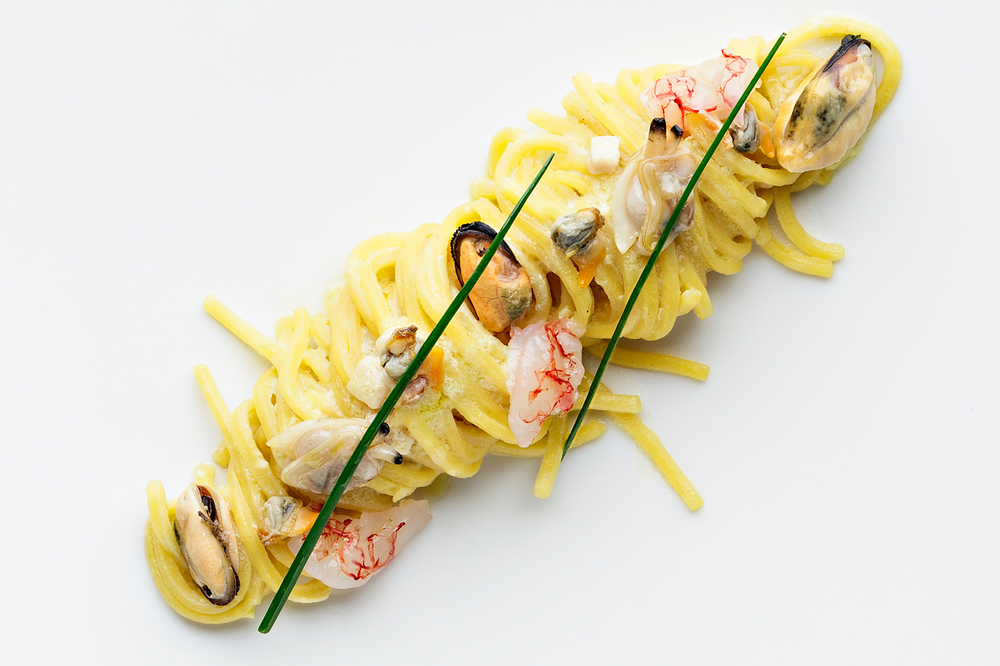

Recipe by Chef Luigi Pomata, of the Luigi Pomata Restaurant in Cagliari.
Carbonara is an Italian pasta dish from Rome made with eggs, hard cheese, cured pork, and black pepper.
The dish arrived at its modern form, with its current name, in the middle of the 20th century.
The cheese is usually Pecorino Romano, Parmigiano-Reggiano, or a combination of the two.